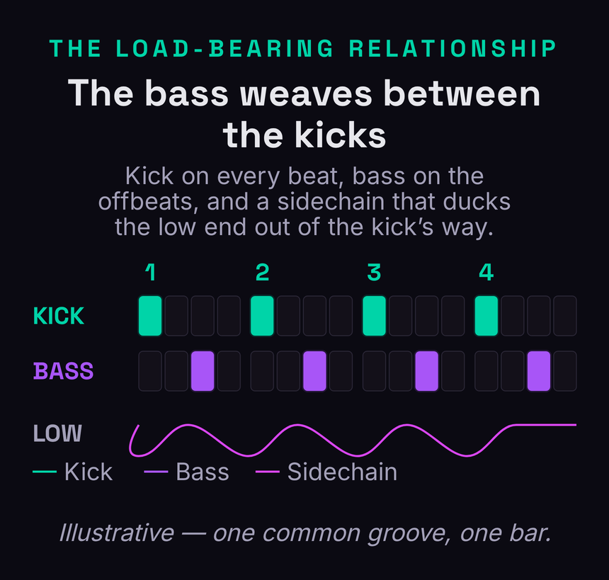
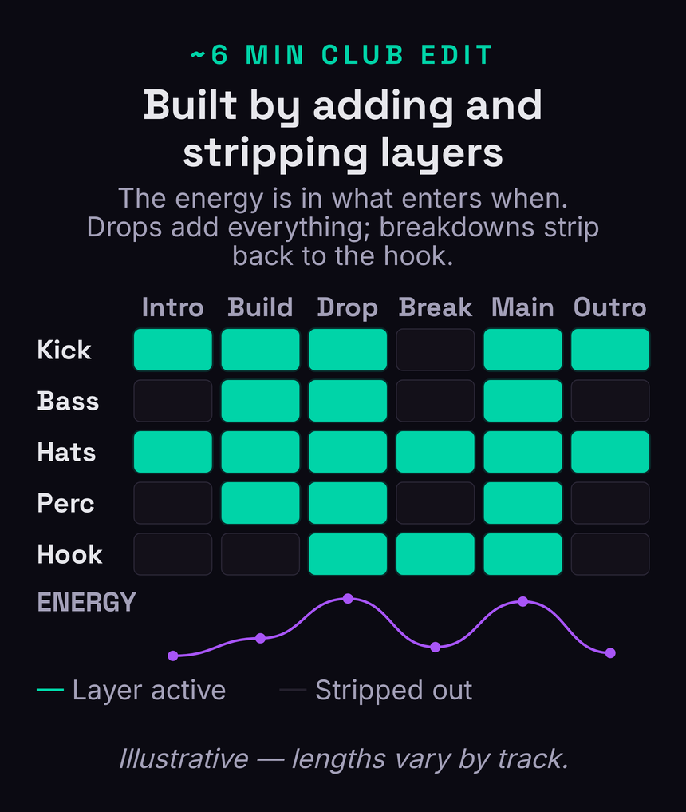
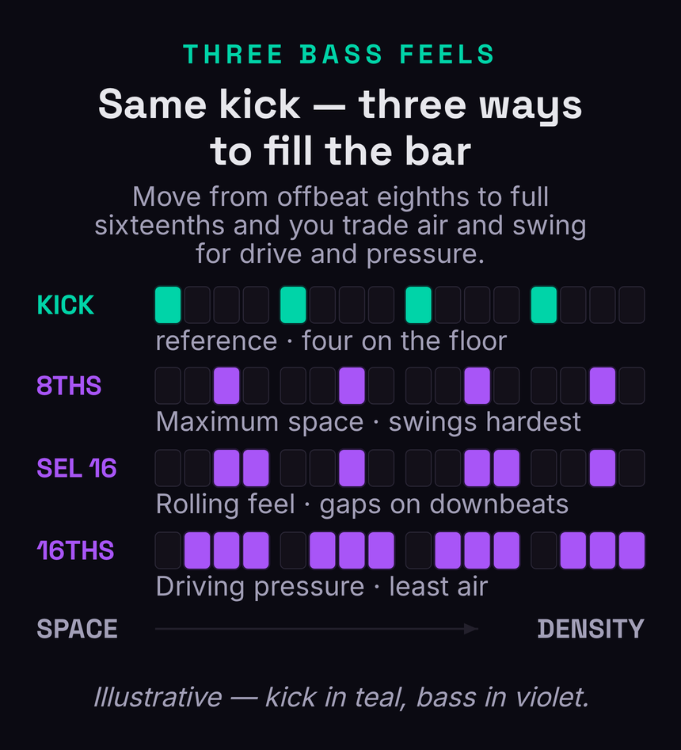

Tech house is everywhere in a club set and almost nowhere in the tutorials that claim to teach it. Most guides hand you a sample pack, point at a kick and a vocal chop, and call it a day — which is why so many bedroom tech-house tracks sound like the right ingredients in the wrong order. The genre’s real secret is the opposite of more: tech house is restraint engineered into groove. It is the meeting point of house’s warmth and techno’s machine discipline, and its entire identity lives in four deliberate choices — a short, punchy kick, a rolling low-passed bass that weaves between those kicks, swung offbeat hats that supply the bounce, and a single minimal hook that drops in and out. Get those four locked and almost everything else can stay empty.
This guide builds a tech-house groove the way producers actually build one: in construction order, from the kick outward, with the kick-and-bass relationship treated as the load-bearing wall it really is. We’ll set the tempo and the key, tune and shape the kick, design and program the rolling bass, lock the two together with sidechain and EQ, lay in the offbeat hats and percussion that swing the whole thing, drop in a minimal top that creates space instead of filling it, then arrange and mix it so it reads on a club system and a phone speaker alike. The thesis the listicles miss is simple and worth saying up front: in tech house, the bassline rhythm is the song. Sound design is secondary to groove, to the velocity-and-filter movement that keeps a two-note loop alive, and above all to how the bass and kick share the low end.
Tech house is four choices built in order: (1) a short, tuned, four-on-the-floor kick that owns the sub for a split second on every beat; (2) a rolling, low-passed bass that lands on the offbeats and is sidechained so it ducks out of the kick’s way; (3) swung offbeat hats plus syncopated percussion for the bounce; (4) one minimal hook — a vocal chop or stab — that drops in and out. Run it at 124–128 BPM, keep the low end mono, and keep everything minimal so the groove has room to move. The bassline rhythm is the hook; nail the kick-and-bass interlock first and the rest is decoration.
What Tech House Actually Is
Tech house is exactly what the name says: techno’s tools and discipline applied to house music’s feel. It grew out of the UK in the 1990s when DJs started blending the deep, swung groove of house with the stripped, hypnotic repetition and harder drum sound of techno, and it never really left the club. The modern strain that dominates Beatport and the festival tents — the sound associated with labels like Defected and Toolroom and producers such as Fisher, Chris Lake, Cloonee, Dom Dolla, Michael Bibi, and the crossover work of Fred again.. — leans on the house side for warmth and bounce while keeping techno’s economy. If you already understand how to make house music and how to make techno, tech house is the deliberate compromise between them, and most of the craft is knowing which parent to borrow from in each part of the track.
What separates tech house from its neighbours is restraint. House often carries chords, a bassline with real melodic content, and a vocal; techno can run dense, evolving sound design across long arrangements. Tech house strips both back. A typical track might contain a kick, a two-note bass, a hat pattern, a shaker, and a four-word vocal chop — and that is the whole record. The energy does not come from adding more; it comes from the relationship between those few elements and from how tightly they swing. This is the hardest idea for new producers to accept, because the instinct when a loop feels empty is to add a layer. In tech house the answer is almost always to fix the groove of what is already there, not to pile something on top of it.
That economy is also why the genre rewards taste over technical firepower. You do not need a deep synth or an exotic plugin chain; you need a kick that hits, a bass that grooves, and the discipline to leave space. The sections below build exactly that, in the order a working producer builds it, so that every element you add has a job and a place in the groove rather than just filling silence.
Set Up: Tempo, Key, and Structure
Start with tempo, because it sets the entire feel. Tech house lives between roughly 120 and 128 BPM, and the modern club sweet spot sits around 125–127. Slower than 122 and the groove starts to feel like deep house; faster than 128 and it tips toward techno’s drive and loses the bounce. Set your project to 126 as a safe default and adjust by ear once the groove is moving. The pulse is four-on-the-floor — a kick on every beat — but unlike straight techno, the swing lives in the offbeat elements, so the grid you build on top will be deliberately pushed and pulled rather than perfectly square.
Key matters less than producers think, but it is worth choosing early so your bass, any stabs, and a vocal chop agree. Most tech house sits in a minor key — A minor, F minor, and G minor are common because they keep the bass in a punchy, mid-low register without getting muddy. If you are pulling a vocal chop from a sample pack, find its key first and build the track around it; nothing kills a groove faster than a bass and a vocal a semitone apart. A quick reference like the chord and key reference or the tempo, key and chord reference tool will tell you what fits, and if you want the bass to imply a little harmonic movement, how to make a chord progression covers the simple minor moves that work without crowding the mix.
Structure comes last in setup but should be sketched before you write a note. Tech house is built for the dancefloor, so think in eight- and sixteen-bar blocks: a DJ-friendly intro that is mostly drums, a build, a main groove (the “drop,” though it rarely explodes the way big-room EDM does), a breakdown that strips back to the hook, and an outro that mirrors the intro for mixing. Lay down dummy clips or arrangement markers now so you are writing into a shape rather than looping a four-bar idea forever. We will return to arrangement in detail once the parts exist, but knowing the destination keeps your eight-bar loop from becoming a track that never goes anywhere.
The Kick: Short, Tuned, Four-on-the-Floor
The kick is the foundation, and in tech house it has a specific job: hit hard, own the sub for a split second, then get out of the way. That means short. A long, boomy kick with a ringing tail might sound huge soloed, but in a mix it smears across the offbeats and leaves no room for the bass to breathe. Choose or design a kick with a fast, punchy transient and a tight decay — enough low-end weight to move air, but ending cleanly before the next sixteenth. If your kick has a long tail, shorten it with a volume envelope or a touch of gating; you want a tuned thump, not a sustained tone.
Tuning the kick is the step most beginners skip and most professionals never skip. A kick has a pitch — the fundamental frequency of its body — and if that pitch clashes with your bass and the key of the track, the low end turns to mud no matter how you EQ it. Drop a tuner or a spectrum analyser on the kick, find its fundamental (often somewhere around 45–60 Hz for tech house), and pitch it to the root of your key or a note that agrees with it. When the kick and bass share a harmonically related low end, they lock together instead of fighting, and the whole groove gets tighter and louder for free.
Program it dead on the grid: one hit per beat, four to the bar, velocities even or very nearly so. Tech house kicks are not humanised the way a live drum part would be — the machine-tight pulse is the spine the swung elements push against. Add a short, tight clap or rim on beats two and four if you want a touch of backbeat, but keep it subtle; the kick is the star of the low end and everything else negotiates around it. With a short, tuned, perfectly square kick in place, you have built the wall the bass is about to weave through.
The Rolling Bass: The Engine of the Track
If the kick is the foundation, the bass is the engine, and in tech house it is also the hook. A great tech-house bassline is a two- or three-note idea that rolls underneath the track with so much groove that you never notice it is barely changing. The classic sound is a punchy sine or filtered saw, low-passed so the brightness sits below the hats and out of the kick’s transient, played on the offbeats so it weaves between the four-on-the-floor kicks. That offbeat placement — landing on the “and” of each beat — is what gives tech house its rolling, forward propulsion. The bass is always pushing toward the next kick.
For the sound, almost any synth works because the design is simple; a single oscillator into a low-pass filter is the whole patch. A saw filtered down to a round, woody tone is the workhorse, and a sine gives you a cleaner, deeper sub-leaning bass when you want less character. If you are reaching for a soft synth, a wavetable instrument like the one covered in our Serum 2 review gives you precise filter control and clean low end, and the broader best synth plugins roundup lists options at every price. But resist the urge to over-design. The groove does the work; a fancy patch on a stiff rhythm still sounds dead.
The single most important move is velocity-to-filter-cutoff. Map note velocity (or an LFO, or both) to the filter cutoff so that harder or accented notes open the filter brighter and softer notes stay dark and round. Now the same two-note pattern breathes — it has dynamics, movement, and a sense of a human pushing and easing off, even though it is a loop. This is the difference between a bassline that sounds programmed and one that grooves. Add a little drive or saturation so the bass generates harmonics that read on small speakers (the saturation Bible entry explains why this makes a sub audible on a phone), keep the low end strictly mono, and you have the rolling engine the whole track runs on. For deeper sound-design layering ideas, how to layer synths covers stacking a sub and a mid-bass without phase trouble.
The Kick-and-Bass Relationship
This is the load-bearing wall of the entire genre, and it is where most tracks live or die. The kick and the bass both want the low end, and they cannot both have it at the same instant or the result is a muddy, undefined thud. The fix is a combination of timing, sidechain compression, and EQ that lets the kick punch through on every beat while the bass fills the space between. Get this interlock right and the groove feels effortless and loud; get it wrong and no amount of mastering rescues it.

Start with sidechain compression: trigger a compressor on the bass from the kick so that every time the kick hits, the bass level ducks momentarily and then recovers before its next note. This clears an instant of space for the kick’s transient and creates the gentle, pumping breath that is part of the tech-house feel — subtler than the obvious EDM pump, but the same mechanism. If you work in Ableton, how to sidechain in Ableton walks the exact routing, the sidechain and sidechain compression Bible entries explain the why, and the sidechain compression designer lets you dial the attack and release shape before you commit. Keep the release fast enough that the bass returns fully before its offbeat note, or the groove loses energy.
Then carve with EQ so the two never compete in the same band. Decide who owns the sub: usually the kick takes the lowest octave (its fundamental and body), and the bass sits just above, rolled off below the kick’s fundamental with a high-pass so it does not pile up under the thump. A gentle dip in the bass around the kick’s body frequency, and a matching focus in the kick, lets each occupy its own space. Our guide to how to EQ bass covers the exact moves, but the principle is simple: sidechain handles the timing, EQ handles the frequency, and together they let the kick and bass share the low end by taking turns rather than fighting. When you can hear the kick crisp on every beat and the bass rolling cleanly between, the hardest part of the track is done.
Drums and Groove: Offbeat Hats and Swing
With the kick and bass interlocked, the drums supply the bounce. The signature element is the offbeat open hat — an open hi-hat on the “and” of each beat, sitting in the same offbeat pocket as the bass and giving the groove its skipping, propulsive lift. Closed hats fill in sixteenths underneath for drive, and the contrast between the closed-hat pulse and the offbeat open hats is a huge part of why tech house moves. Keep the open hat bright but not harsh; it needs to cut through a club system without becoming fatiguing over a six-minute track.
Swing is what turns a programmed pattern into a groove. A perfectly square sixteenth-note hat pattern sounds rigid; nudging the offbeat sixteenths slightly late — applying swing — gives the whole top end a human, rolling feel. Most DAWs have a global groove or swing control; start around 8–16% and dial to taste. The swing, groove, and the pocket Bible entries unpack what is actually happening rhythmically, and it is worth understanding because swing is the single most underused tool in beginner tech house. Apply it to the hats and percussion, not the kick — the kick stays square so the swung elements have something rigid to push against.
Round out the kit with syncopated percussion: a shaker running sixteenths for energy, a conga or bongo hit or two placed off the grid for movement, maybe a rim or a tight clap on the backbeat. The art is syncopation — placing accents in the gaps rather than on the obvious beats — so the percussion answers the bass and hats instead of doubling them. Program a one- or two-bar percussion loop with a couple of elements that trade off, and you have a groove that feels alive across long stretches. For the broader drum-mixing picture — balancing the kit, controlling transients, keeping the top end clear — how to mix drums covers the moves that keep all of this punchy in a dense club mix.
The Minimal Top: Hook, Chop, Stab
Now, and only now, comes the top — and the discipline here is to add as little as possible. The tech-house hook is usually a single element: a chopped vocal phrase, a short synth stab, or a filtered chord hit that drops in and out across the arrangement. Its job is not to carry a melody the way a pop topline would; its job is to create a moment of recognition and then get out of the way so the groove can roll. A four-word vocal chop that appears for two bars, disappears for six, and returns is more effective than a busy melodic line fighting the bass for attention.
The most powerful arrangement trick at the top is call-and-response. Place the hook so it answers the bass — the bass rolls, the hook lands in a gap, the bass answers back. This conversation between two minimal elements is far more engaging than either one playing constantly, and it is the technique that makes a sparse track feel full. The call-and-response Bible entry covers the principle, and how to make melody helps if your hook is a played stab rather than a sampled chop. Process the hook to sit in its own space: a band-pass or high-pass to keep it out of the low end, a touch of creative delay — a tempo-synced eighth or dotted-eighth throw, set with the delay time calculator or an LFO sync calculator — to add width and movement without clutter.
If you do use a melodic stab or a short chord, keep it minimal and let the production carry it. One or two chords, voiced tightly, filtered, and rhythmically chopped, will do more for a tech-house track than a full progression. The genre is about groove and space; a top that respects that — appearing, creating a hook, and dropping out — is what separates a track that holds a dancefloor from one that exhausts it. When in doubt, mute the hook and ask whether the groove still works. In good tech house, it always does, and that is the point.
Arrangement: Add and Strip
Tech house is arranged by addition and subtraction, not by writing more music. You already have every element you need; the arrangement is the order in which they enter and leave. The energy comes from contrast — stripping back to just the kick and a hat, then bringing the bass and percussion back in, then dropping the hook on top — so that the listener feels movement even though the palette never grows. This is why the genre works so well for DJs: the long, drum-led intros and outros exist purely to mix in and out of, and the breakdowns and drops are built from the same handful of parts rearranged.

A workable map: an intro of kick, hats, and a hint of percussion for sixteen bars; a build that adds the bass and tightens the hats; the main groove where everything locks together and the hook lands; a breakdown that strips back to the hook and a filtered element to reset the ear; and a second main section that brings it all back, often with a small variation — a new percussion fill, the hook chopped differently — to keep it fresh. Keep transitions short and functional: a one-bar filter sweep, a reverse cymbal, a quick drum fill. Tech house does not need the elaborate risers and impacts of big-room EDM, and overusing them dates a track instantly. For the mechanics of building and releasing tension within these sections, how to build tension and drops in EDM is useful, and how to arrange a song covers the broader structural craft.
The one rule that ties it together: every time you reach a new section, change something by adding or removing a layer, never by writing a new part. If a section feels static, strip an element out for a few bars and bring it back — the absence makes the return hit harder. This add-and-strip discipline is the entire arrangement strategy, and it is why a tech-house track built from five elements can hold attention for six minutes while a busier track built from twenty cannot.
The Mix: Mono Lows, Clear Hats, Glue
A tech-house mix is judged on the dancefloor, which means three things matter most: a tight, mono low end; clear, non-fatiguing hats; and overall glue that makes the few elements sound like one record. Start at the bottom. Keep everything below roughly 120–150 Hz in mono so the kick and bass translate on a big club system without phase cancellation eating your low end. Any stereo widening on the bass should sit above the sub; the foundation stays centred and tight. This single discipline — mono lows — is the most common thing separating an amateur tech-house mix from a club-ready one.
In the mids and highs, the priority is clarity and space rather than density. Because the arrangement is sparse, each element can have room, so resist the urge to over-process. High-pass anything that does not need low end so the sub stays uncrowded, give the hats a gentle high-shelf for air without harshness, and use a little saturation across the bus or on individual elements to add the harmonic warmth that makes a clean digital mix feel like a record. Keep an eye on the offbeat pocket where the bass and open hat both live, and make sure they are not masking each other — a small EQ move on one usually clears it.
Finally, glue the whole thing together. A gentle bus compressor across the drum group or the master, set for just one or two decibels of movement keyed to the kick, ties the elements into a single, breathing groove. Reference a released tech-house track at matched loudness and listen for low-end weight, the clarity of the hats, and the overall punch — not for raw volume. Tech house does not need to be crushed; it needs to be tight and to groove. When your mix translates from your monitors to your phone speaker to a friend’s earbuds and still moves, it is ready.
A Tale of Two Grooves
To make the bassline-is-the-song idea concrete, compare two versions of the same eight-bar loop — identical kick, hats, and hook, but different bass rhythms. In the first, the bass plays simple offbeat eighth notes: one note on the “and” of every beat, weaving cleanly between the kicks. This is maximum space. The groove breathes, the kick is crisp, and the track feels open and rolling — the deep, hypnotic end of tech house. It is also the safest place to start, because there is so much room that nothing masks anything else.

In the second version, the bass rolls in selective or full sixteenth notes, filling more of the bar. Now the groove has drive and pressure — the busier, harder end of the genre, the festival sound. But density has a cost: the more the bass fills, the more it competes with the kick and the hats, so the sidechain has to work harder, the EQ carving has to be more surgical, and the swing matters even more to keep it from sounding mechanical. The trade-off is always space versus density, air versus drive, and most tech house lives left of centre — closer to the offbeat groove — precisely because space is what lets the kick punch and the swing show. The lesson is that the bass rhythm, not the bass sound, decides what kind of tech-house track you are making. Change the rhythm and you change the genre’s sub-flavour, even with everything else held constant.
Between those two extremes sits the pattern most modern tech house actually uses: selective sixteenths. Here the bass rolls in sixteenth notes but keeps deliberate gaps — most importantly on or just after the downbeats, where the kick lands — so it feels busier and more driving than plain offbeats without ever burying the kick. The trick is to think subtractively: start from a full sixteenth roll and mute the notes that collide with the kick’s transient, leaving a syncopated pattern that pushes hard but still breathes on every beat. This is where velocity-to-filter movement earns its keep, because a denser pattern needs the brightness to rise and fall or it turns into an undifferentiated buzz. When you are choosing between the three feels, let the rest of the arrangement decide: a sparse, hook-led track wants the offbeat groove and its space, while a peak-time, percussion-heavy roller can carry the selective or full sixteenths because the energy is already high. Pick the rhythm that leaves room for whatever else the section is doing, and the bassline will sound like a choice rather than a default.
Common Mistakes
The most common mistake is a low end that is not resolved — an untuned kick, a bass fighting it in the same frequencies, no sidechain, and a stereo sub. The result is a loop that sounds fine soloed and turns to mud the moment it plays loud. Fix the interlock first: tune the kick to the key, sidechain the bass, carve the EQ so each owns its band, and keep everything below 150 Hz mono. Almost every “why doesn’t my track sound club-ready” problem traces back to this one relationship.
Adding layers to fix a loop that feels empty. In tech house, an empty-feeling loop almost always means the groove is weak, not that an element is missing. Improve the swing, the velocity-to-filter movement, or the call-and-response between bass and hook before you add anything — nine times out of ten the loop was never missing a part.
The second mistake is a static, lifeless bass. A two-note loop with no velocity-to-filter movement, no swing, and no saturation is a dead bass no matter how good the patch sounds. Tech house basslines are alive — they breathe with the filter, push with the swing, and read on small speakers because of saturation. If your bass feels robotic, the problem is movement, not sound design. The third common error is over-arranging: stacking risers, impacts, and busy melodic lines borrowed from big-room EDM onto a genre built on restraint. Strip those out; tech house earns its energy from contrast and groove, not from production fireworks, and a sparse arrangement almost always grooves harder than a busy one.
The last trap is ignoring swing and the offbeat pocket entirely — programming everything square and wondering why the track sounds stiff. The bounce of tech house lives in the offbeats and in the small timing pushes of the hats and percussion. Spend real time on the groove settings, place your accents off the beat, and treat the rhythm as the creative work rather than an afterthought. In a genre this minimal, the groove is not part of the track — it is the track.
Three Builds to Lock the Groove
Theory sticks when you build it. These three graded exercises take you from a static loop to a moving groove to a full eight-bar drop. Do them in order; each one isolates one of the skills that separates tech house that grooves from tech house that merely plays.
- Set the project to 126 BPM and program a four-on-the-floor kick, one hit per beat, velocities even.
- Tune the kick to the root of A minor, then write a one-bar bass that lands on the offbeat eighth notes (the “and” of each beat) on a low-passed saw or sine.
- Sidechain the bass to the kick and high-pass the bass below the kick’s fundamental. Loop it and confirm the kick is crisp on every beat and the bass rolls cleanly between — no mud.
- Map velocity to filter cutoff on the bass so accented notes open brighter and softer notes stay round; vary the velocities so the loop breathes.
- Add offbeat open hats on the “and” of each beat, closed hats in sixteenths underneath, and apply 10–15% swing to the hats and percussion only — leave the kick square.
- Add a shaker and one syncopated percussion hit off the grid. A/B the loop against the square version from the first exercise and note how much more it moves.
- Add a minimal top — a chopped vocal phrase or a short filtered stab — and place it in call-and-response with the bass, so it answers in the gaps rather than playing constantly.
- Arrange eight bars that build by addition: kick and hats, then bass, then full percussion, then the hook landing on top for the final four bars.
- Strip back to a four-bar breakdown of just the hook and a filtered element, then bring the full groove back. Mix it with mono lows, a gentle bus glue, and reference a released track at matched loudness; note the one gap that remains.
Frequently Asked Questions
Tech house sits between roughly 120 and 128 BPM, with the modern club sweet spot around 125–127. Slower than about 122 and it starts to feel like deep house; faster than 128 and it drifts toward techno’s drive and loses the bounce. The pulse is four-on-the-floor — a kick on every beat — but the swing lives in the offbeat hats, percussion, and bass rather than in the kick. Set your project to 126 as a safe default and adjust by ear once the groove is moving.
Tech house is the deliberate middle ground between the two. House brings the warmth, swing, and groove; techno brings the stripped, hypnotic repetition and harder, machine-tight drums. Compared with house, tech house is more minimal and percussive, usually without full chord progressions or a sung vocal. Compared with techno, it is bouncier, swung, and more groove-led rather than relentless. The four-on-the-floor kick is shared by all three; what changes is the feel, the density, and how much the offbeat groove drives the track.
Almost any synth works, because the patch is simple — a single oscillator into a low-pass filter is the whole sound. A saw filtered to a round, woody tone is the workhorse, and a sine gives a cleaner, deeper sub-leaning bass. A wavetable synth such as Serum 2 or a free option like Vital gives precise filter control and clean low end, but the groove matters far more than the instrument. Focus your effort on velocity-to-filter movement, swing, and saturation rather than on finding a special patch; a basic bass with a great rhythm beats a great patch with a stiff one.
Three moves stacked together. First, play the bass on the offbeats so it weaves between the kicks and pushes forward. Second, sidechain the bass to the kick so it ducks on every beat — that is the pump, and it also clears space for the kick’s transient. Third, map velocity to filter cutoff so the pattern breathes instead of sounding static. Add light saturation so the bass reads on small speakers, keep the low end mono, and the result is the rolling, breathing engine the genre is built on. The rhythm and the sidechain do more than the patch ever will.
Most tech house is in a minor key — A minor, F minor, and G minor are common because they keep the bass punchy without getting muddy. Key matters less than groove, but choose it early so the bass and any vocal chop or stab agree. If you are using a sampled vocal, find its key first and build around it; a bass and a vocal a semitone apart will fight no matter how you mix them. A key reference tool will quickly tell you what fits, and a simple two- or three-note bass rarely needs more harmonic complexity than that.
Club-oriented tech house usually runs five to seven minutes, with long, drum-led intros and outros of sixteen to thirty-two bars built specifically for DJs to mix in and out of. A radio or streaming edit might be trimmed to three or four minutes with a faster intro, but the club version is the native format. Think in eight- and sixteen-bar blocks, keep the intro and outro mostly drums for mixing, and let the main groove and breakdown sit in the middle. The length comes from arrangement — adding and stripping layers — not from writing more material.
No. Tech house is one of the most stock-friendly genres there is, because its sound comes from groove and arrangement rather than from exotic processing. Your DAW’s built-in synth, compressor, EQ, and a saturation plugin cover everything in this guide. A good sidechain compressor and a clean EQ for the kick-and-bass relationship matter more than any boutique plugin, and both ship with every major DAW. Spend your money on monitoring and your time on groove; the genre rewards taste and restraint far more than gear.
Club-ready comes down to the low end and the groove. Tune the kick to the key, sidechain and EQ-carve the bass so the two share the low end by taking turns, and keep everything below about 150 Hz in mono so it translates on a big system. Then make sure the groove actually swings — offbeat hats, a little swing on the percussion, velocity movement on the bass. Finish with gentle bus glue and reference a released track at matched loudness, listening for low-end weight and clarity rather than chasing volume. A tight, mono, grooving low end is what separates a club-ready track from a bedroom one.